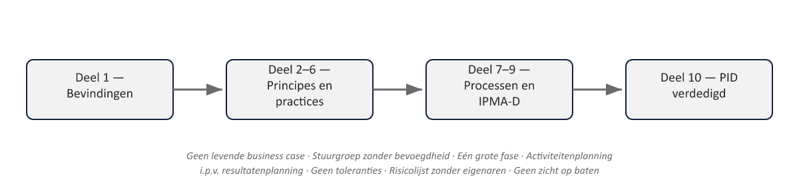

01
Het laatste deel van niveau 1
⏱ 3 minDit deel heeft twee doelen: voorbereiden op de PRINCE2 7 Foundation-examen (en, waar relevant, IPMA-D), en de capstone-opdracht: het opstellen en verdedigen van een volledig Project Initiation Document voor de herstart van WGP 2.0, voor een stuurgroep. Beide bouwen voort op alles uit deel 1 tot en met 9.

Controlevragen
Uit het proefexamen bij deel 10, met antwoordsleutel uit de docentenhandleiding
1Welke van de volgende is GEEN van de zeven PRINCE2-principes?
A. Ensure continued business justification
B. Manage by stages
C. Focus on products
D. Manage by budgetToon antwoord
Juist antwoord: D. “manage by budget” bestaat niet als principe; het dichtstbijzijnde principe is manage by exception.
2Wie bezit de business case in een PRINCE2-project?
A. De projectmanager
B. De Executive
C. De Senior User
D. Project AssuranceToon antwoord
Juist antwoord: B. de Executive bezit de business case; de projectmanager stelt op en onderhoudt.
3Wat is de juiste volgorde van product-based planning?
A. PBS → PFD → Project Product Description → Productbeschrijvingen
B. Project Product Description → PBS → Productbeschrijvingen → PFD
C. PFD → PBS → Project Product Description → Productbeschrijvingen
D. Productbeschrijvingen → PBS → PFD → Project Product DescriptionToon antwoord
Juist antwoord: B. Project Product Description → PBS → Productbeschrijvingen → PFD.
4Welke van de volgende is GEEN van de vier issue-categorieën?
A. Request for change
B. Off-specification
C. Risk transfer
D. Problem/concernToon antwoord
Juist antwoord: C. “risk transfer” is een risicorespons, geen issue-categorie.
5Welke risicorespons hoort NIET bij een bedreiging?
A. Vermijden
B. Exploiteren
C. Overdragen
D. AccepterenToon antwoord
Juist antwoord: B. “exploiteren” is een kansrespons, geen bedreigingsrespons.
6Wat is de output van Starting up a Project?
A. Het PID
B. De project brief en het initiation stage plan
C. Het End Stage Report
D. Het Project PlanToon antwoord
Juist antwoord: B. SU levert de project brief en het initiation stage plan op, niet het PID (dat is IP).
7Wat gebeurt er wanneer een fasetolerantie dreigt te worden overschreden?
A. De projectmanager negeert dit tot de faseovergang
B. Er wordt een Exception Report opgesteld, mogelijk gevolgd door een Exception Plan
C. Het project wordt automatisch prematuur gesloten
D. De stuurgroep neemt de dagelijkse sturing overToon antwoord
Juist antwoord: B. eerst een Exception Report, mogelijk gevolgd door een Exception Plan na goedkeuring van de stuurgroep.
8Closing a Project is:
A. Een aparte fase na de laatste beheersfase
B. Onderdeel van de laatste beheersfase
C. Alleen van toepassing bij premature afsluiting
D. De verantwoordelijkheid van de stuurgroep, niet de projectmanagerToon antwoord
Juist antwoord: B. Closing a Project is onderdeel van de laatste beheersfase, geen aparte fase.